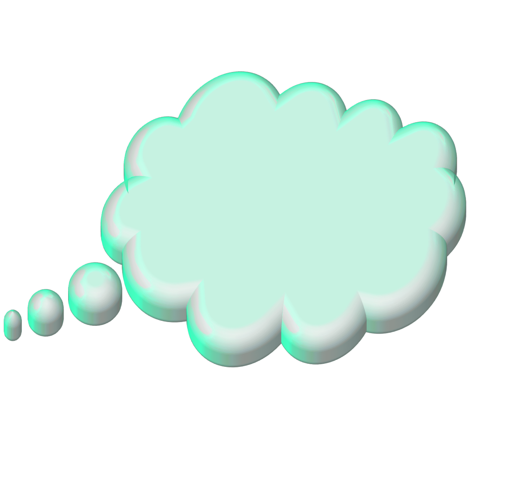

An interactive project created by @Voth000 for @bapxao.oi ¶ BHN2 exhibition

"May you discover mindfulness and cultivate patience within"
What is burnout?
Burnout itself is not a deliberate or beneficial phase for personal growth or your higher self.
Burnout is a state of exhaustion and imbalance caused by prolonged stress or overwork.
It can have negative effects on your physical health, mental well-being, and overall quality of life.
Sowing the seeds
However, the recovery process from burnout can indeed lead to positive transformation and a greater sense of happiness and well-being.
When you recognize the signs of burnout and take steps to address it, such as practicing self-care,
setting boundaries, and seeking support, you can start to restore balance and prioritize your well-being.
Growing the flowers
During the recovery phase, you may engage in activities that promote self-reflection, self-discovery, and personal growth.
This can include exploring new interests, reevaluating priorities, and making changes in your lifestyle or career to align with your values and needs.
By nurturing yourself and implementing healthy habits, you create a foundation for personal development and a more fulfilling life.
End Note
Click outside the box to close.
Welcome to Bhn Art Expo 2!!!
Please click on the model behind this popup to continue.
Contact Us